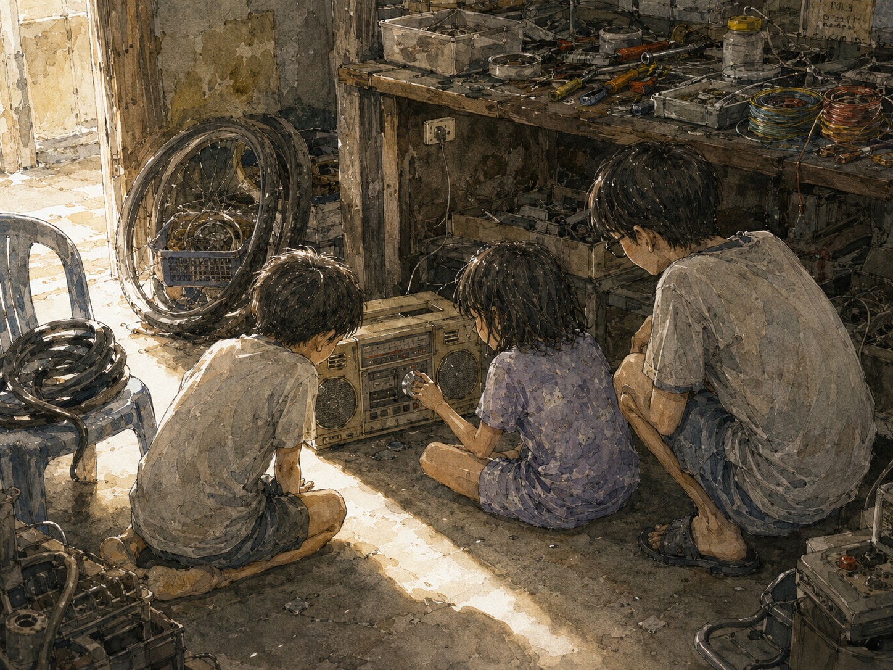
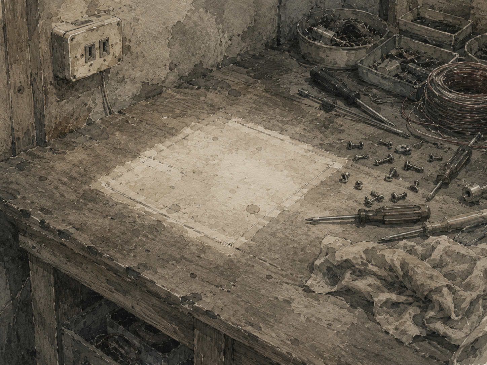

Từ hôm bắt tay anh Môn ở gốc cây trứng cá, đời tớ đổi hẳn.
Tớ có chỗ trú thân mới.
Nhà anh Môn nằm cuối dãy, cái nhà làm nghề sửa đồ điện tử. Nhưng gọi là “tiệm” thì hơi sang — nó chỉ là cái nhà mà đồ đạc tràn cả ra hiên. Bơm xe dựng ngoài cửa. Mấy cái bánh xe chất chồng lên nhau ở góc. Ruột xe cũ vắt ngang cái ghế nhựa. Trong nhà thì bàn ghế bị đẩy dạt hết vào tường để lấy chỗ cho một cái bàn thợ, trên đó bày la liệt tua vít, kìm, mấy cuộn dây điện màu, và mấy cái hộp nhựa đựng ốc vít mà tớ chưa bao giờ hiểu nổi cách phân loại.
Cả nhà có mùi. Mùi dầu nhớt trộn với mùi nhựa cháy nhè nhẹ — cái mùi của mối hàn. Bây giờ tớ đi ngang một tiệm sửa xe nào mà ngửi thấy mùi đó, người tớ vẫn dựng lên một cái.
Cậu hiểu không, với một thằng nhóc tám tuổi vừa mất hết bạn, cái nhà đó không phải là nhà ai hết. Nó là một cái kho báu.
Ở đó tớ gặp cái Huyền.
Nó là em gái anh Môn, bằng tuổi tớ. Cái giọng đanh đanh gọi anh vô ăn cơm hôm trước — chính nó.
Con Huyền không giống mấy đứa con gái tớ từng biết. Tóc nó ngang cổ, xõa tự nhiên, rối, hơi xơ — không cột, không kẹp, không nơ nếc gì hết. Nó ít cười. Mà lúc cười thì mép chỉ nhếch lên một bên, còn con mắt vẫn sắc lẻm.
Hôm đầu tớ qua, nó đứng chống nạnh giữa nhà, ngó tớ từ đầu tới chân, rồi hỏi anh nó:
“Ai vậy?”
Không hỏi tớ. Hỏi anh nó. Y như tớ là một món đồ ai vừa đem tới sửa.
“Thằng Thiện. Mới dọn tới nhà số hai.”
Nó gật. Rồi quay đi làm chuyện của nó.
Cậu để ý chưa — nó không chào tớ, cũng không đuổi tớ. Nó chỉ ghi nhận tớ. Sau này tớ mới hiểu đó là cách con Huyền tiếp nhận người: nó không cần biết mày là ai, nó chỉ cần biết mày xếp vào đâu trong cái xóm này. Xếp xong rồi thì thôi.
Cái nhà đó có đủ thứ để một thằng nhóc nghịch.
Nhưng thứ làm ba đứa tớ ngồi bệt xuống đất cả buổi chiều là một cái cát-xét cũ.
Nó nằm ở góc bàn thợ, dưới một tấm giẻ. To, nặng, vỏ nhựa ngả vàng, có hai cái loa lưới ở hai đầu và một hàng nút bấm to bè ở giữa. Núm vặn thì bằng nhôm, xoay ra thấy một cái kim đỏ chạy trên dải số. Cái loại máy mà bây giờ người ta để lên kệ cho đẹp — hồi đó nó chỉ là một cục đồ hư nằm chờ ai đó rảnh tay.
Tớ hỏi anh Môn cái đó là cái gì.
Anh liếc qua một cái, hất tóc lên.
“Cát-xét. Hư rồi. Ba tao nói hư rồi.”
Xong. Anh quay lại với cái đang làm dở.
Cậu thấy chưa. Với anh, câu chuyện đó khép lại ở đó. Ba anh nói hư, tức là hư. Trong cái nhà làm nghề sửa đồ, câu “ba tao nói hư rồi” nó là một bản án — người có thẩm quyền cao nhất đã phán, còn tranh cãi gì nữa.
Nhưng tớ thì mới tới. Tớ không biết cái luật đó.
Tớ ngồi xổm bên cái máy hồi lâu. Lấy tay quẹt bụi. Bấm thử mấy cái nút — nút không xuống, cứng ngắc. Rồi tớ thấy sợi dây điện cuộn tròn quấn sau lưng máy.
Tớ gỡ ra. Rồi tớ cắm.
Tớ chẳng nghĩ gì hết đâu, cậu đừng tưởng tớ khôn. Tám tuổi thì làm gì có suy luận. Tớ chỉ thấy có cái dây, mà dây thì để cắm.
Rồi tớ nhấn cái nút to nhất.
Tách.
Nút xuống. Nút xuống thật.
Rồi có tiếng.
Rè. Rè rè rè. Một thứ tiếng rè khô khốc, như ai vò giấy bạc trong đó. Nhưng nó là tiếng — cái cục đồ chết đó vừa phát ra một tiếng.
Tớ ngồi im. Con Huyền đang làm gì đó ở góc nhà, quay phắt lại.
Anh Môn buông tua vít xuống.

Ba đứa xúm lại quanh cái máy như xúm quanh một con vật lạ.
Con Huyền là đứa vặn cái núm đầu tiên — tất nhiên rồi, cậu tưởng nó chờ ai cho phép chắc. Nó vặn một phát, cái kim đỏ nhích qua, tiếng rè đổi giọng, chuyển thành một thứ rè khác, cao hơn. Rồi nó vặn tiếp. Rè. Vặn tiếp. Rè.
Rồi đột nhiên — có người nói.
Một giọng đàn ông. Đọc cái gì đó, đều đều, trầm trầm, chữ được chữ mất, chìm trong tiếng rè như người nói vọng qua một bức tường dày. Tớ chẳng nghe ra ông ta nói gì. Ba đứa cũng chẳng đứa nào quan tâm ông ta nói gì.
Cái làm ba đứa tớ đứng hình, là có người ở trong đó.
Cậu hiểu không. Cái hộp nhựa vàng khè đó nằm im dưới tấm giẻ không biết bao lâu. Ba anh Môn — thợ sửa đồ, người biết nhiều nhất cái xóm này — đã tuyên nó chết. Vậy mà nó không chết. Nó chỉ đang ngủ. Và ba đứa con nít vừa đánh thức nó dậy.
Con Huyền vặn tiếp. Giọng ông kia trôi mất, tiếng rè trở lại.
“Vặn ngược lại!” tớ hét.
Nó vặn ngược. Trật. Vặn nữa. Trật.
Rồi bắt được một khúc nhạc.
Không biết bài gì. Đàn với trống, nghe qua ba lớp rè. Nghe được chừng mươi giây thì lại trôi mất.
Ba đứa tớ vặn cái núm đó suốt buổi chiều. Vặn tới, vặn lui, tranh nhau vặn. Có lúc bắt được nhạc. Có lúc bắt được người nói. Có lúc chỉ có tiếng rè, mà vẫn ngồi nghe, vì biết đâu.
Tại sao nó chạy?
Tớ không biết. Anh Môn cũng không biết. Ba anh nói nó hư, mà nó có hư đâu.
Có thể ổng sửa nửa chừng rồi bỏ đó, quên mất là đã sửa gần xong. Có thể trong đó có cái gì kẹt, mà tớ cắm dây rồi bấm mạnh một phát thì nó bung ra. Có thể ổng nói vậy cho tụi nhỏ đừng đụng vô. Có thể chẳng có lý do nào hết.
Cả ba đứa tớ, không đứa nào đi hỏi ba anh Môn.
Cậu biết tại sao không? Vì hỏi thì ổng sẽ trả lời. Mà trả lời thì hết.
Chiều đó, ba đứa nhóc ngồi bệt dưới sàn nhà bụi bặm, quanh một cái hộp nhựa vàng khè đang rè rè trong tay, và ba đứa đều biết chắc một chuyện, không đứa nào nói ra:
Tụi nó vừa làm được một việc mà người lớn không làm được.
Cái cát-xét đó, tớ chơi với nó được bao lâu?
Tớ không nhớ.

Đây là chỗ kỳ cục nhất của cả câu chuyện, cậu ạ. Tớ nhớ như in cái buổi chiều nó sống dậy — nhớ tiếng nút bấm xuống, nhớ tay con Huyền vặn cái núm nhôm, nhớ giọng ông kia trôi qua rồi mất. Từng đó thì rõ mồn một.
Còn cái ngày nó biến mất thì tớ không có lấy một mảnh.
Nó không đi đâu cả. Chỉ là một hôm nào đó, cái góc bàn thợ trống ra. Và tớ không nhớ mình có nhận ra hôm đó không, hay là mấy hôm sau, hay là cả tháng sau mới sực nhớ ra ủa cái máy đâu rồi. Tớ cũng không nhớ có đứa nào hỏi không. Chắc là không. Con nít mà, có món đồ chơi mới thì quên món cũ, cái đó bình thường tới mức chẳng ai coi là mất mát.
Chắc ba anh Môn thấy nó chạy được. Rồi ổng ngồi xuống, mở ra, làm nốt phần còn lại. Rồi ổng bán.
Nhà làm nghề sửa đồ mà. Đồ sửa xong thì để làm gì, nếu không phải để bán.
Tớ nghĩ ổng chẳng ác ý gì hết. Trong mắt ổng, đó là một cái máy hư nằm chờ tới lượt, giờ nó chạy rồi, vậy thì đẩy đi thôi. Ổng đâu có biết cái buổi chiều đó. Ổng đâu có ngồi dưới sàn với ba đứa nhóc mà vặn cái núm nhôm suốt mấy tiếng đồng hồ.
Với ổng nó là một món hàng.
Với ba đứa tớ nó là một phép màu.
Mà phép màu thì bán được, còn buổi chiều đó thì không.